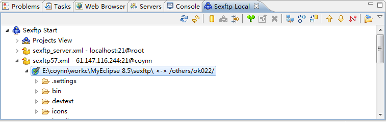
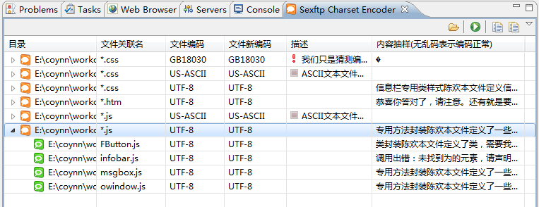

Sexftp简介
Sexftp是FTP上传与下载的eclipse插件,集成在ECLIPSE中，方便开发人员进行FTP相关操作，省去来回切换工具及选择目录的麻烦。
- Sexftp支持上传、下载等基本操作;同时可以直接eclipse中查看或编辑服务器端的文件并自动上传回服务器;
- 支持本地文件与服务器文件的内容比较、目录比较;
- 支持服务器视图与本地视图灵活切换与定位，支持项目浏览器(Package Explorer、Project Explorer、Navigator)目录定位到sexftp本地视图；
- 自动中文编码识别与检查，可有效防止乱码;
- 支持增量上传，每次可只上传相对上次上传有变化的文件，以减少上传文件数量以及与服务器的交互次数;
- 支持上传后的本地目录与远程目录对比，以便二次确认所有文件被成功上传。
环境说明
JDK版本: 1.5及以上。
ECLIPSE版本：3.5（Myeclipse版本需8.5及以上）
操作系统：windows (unix下未测试验证)
安装方式(选择一种安装方式即可)
使用自带安装程序
此安装方式简单，推荐使用。要求系统可以执行JAVA命令且JDK版本在1.5及以上。如下两种选择一种即可。
- 解压rar压缩包到eclipse/myeclipse所在目录的附近(安装程序将在该目录附近寻找eclipse/myeclipse)，运行install.bat文件(或手动在命令行执行 java -jar yourpath/sexftp_2012.0.0.***.jar,按提示操作即可)，按提示操作即可。
- 先运行你要安装插件的eclipse/myeclipse(安装程序将在windows进程列表中寻找eclipse/myeclipse)，再运行install.bat文件(或手动在命令行执行 java -jar yourpath/sexftp_2012.0.0.***.jar,按提示操作即可)，按提示操作即可。
手动更改配置文件安装
如果不想使用自带安装程序安装，可以参考下面的手动配置。下面以Myeclipse为例
假如 MyEclipse 安装在 Is:D:\Program Files\Genuitec\MyEclipse 8.5\(请按实际更改该路径)
- 解压文件，保证路径是有效的 D:/Program Files/Genuitec/sexftp/sexftp_2012.0.0.201202120942.jar
- 记事本打开D:\Program Files\Genuitec\MyEclipse 8.5\configuration\org.eclipse.equinox.simpleconfigurator\bundles.info 文件
(Eclipse的对应的文件在eclipse\configuration\org.eclipse.equinox.simpleconfigurator\bundles.info )
最后一行加入如下内容:
sexftp,2012.0.0.201202120942,file:/D:/Program Files/Genuitec/sexftp/sexftp_2012.0.0.201202120942.jar,4,false
如果以前安装过Sexftp，将那一行配置删除即可。 - 重启 Myeclipse，安装成功即可在 工具栏看到一个小鸟图标，在菜单栏看到Sexftp。
第一次使用
- 点击工具栏的小鸟图标或菜单栏的Sexftp->work in sexftp world。打开 Sexftp Local 视图.
- 展开节点 Sexftp Start->Projects View->要上传的工程->路径
- 点右键->新建Sexftp上传单元，对话框中填好FTP服务器相关信息。点确定。
- 系统生成Sexftp上传单元的XML配置文件，客户端目录选择为第2步所选择的目录，设置好客户端目录以及服务端目录对应关系，保存后上传单元即生效。可以在 Sexftp Local 视图中看到。
- 展开这个上传单元节点，选择好目录后点右键，即可使用各菜单进行上传、比较，下载等操作。

编码检查及转换(防乱码)工具
Sexftp带有一个编码检查及转换工具 Sexftp Charset Encoder，防止乱码用。
实际开发中，经常会拷贝别人的代码，或从网上拷贝，或从其他人那里拷贝，然而这些文件的编码不一定一样，所以经常出现一个工程中有的文件是UTF-8编码，有的文件又是GB2312编码，编码五花八门，但是一般又喜欢在eclipse中往往会设置只使用一种编码(常设置为utf-8)，这样打开其他编码文件的时候，乱码就出现了，如果再修改保存，那乱码就一直存在了。
Sexftp Charset Encoder主要是检查工程中的所有文本文件的编码，以便分析编码是否一致。Sexftp Charset Encoder 可以分析工程所有的文件编码，Sexftp Charset Encoder 会将这些文件的非英文字符以分析出的编码抽样展示出来，抽样数据无乱码表示编码正常，可以修改这些文件的编码(例如GBK->UTF-8)，从而达到编码统一的目的。同时也可以作为检查工程所有文件编码的工具。
在工程中选择好文件夹后点右键-> Sexftp Charset Encoder，即可启动 Sexftp Charset Encoder，她将先分析所有文件编码，然后展示出来，如果需要转换编码，直接修改 文件新编码即可。转换编码的前提是 抽样数据 没有乱码。

两个术语介绍
【上传单元】一个上传单元就是一个XML文件，采用XML配置文件方便复制粘贴以及导入导出。一个上传单元包含一个FTP服务器IP 用户密码等配置以及多个 客户端与服务器目录对应关系。上传单元的XML文件可用 【新建Sexftp上传单元】 操作生成，生成后只需要填入配置即可。
【文件上传点】每次文件上传后，都会记录一次 文件上传点，仅占用很小的磁盘空间。这是为了方便本地文件比较，方便查看相对于上次上传后的改动文件，这样每次上传就不必要全部上传了，只需要上传有改动的文件，节约了网络流量与带宽，特别是网络较慢的情况下，这个功能就比较有意义了。
功能点简要介绍如下
Sexftp的主要操作都是在Sexftp视图中完成的，有Sexftp Local 本地视图、Sexftp Server 服务端视图、Sexftp Synchronize 同步比较视图、Sexftp Charset Encoder编码检查与转换视图 这四个视图。可在window->showview->other Sexftp 节点下找到并打开她们。目前因为许多文件例如.jar、webroot\WEB-INF\class 目录下的文件在项目浏览视图(Package Explorer、Project Explorer、Navigator)中不可见，所以主要的功能菜单暂时没有集成到eclipse项目浏览视图的右键菜单中，所以需要在sexftp视图展开节点找到文件并执行FTP相关操作。不过支持将选中的项目浏览器的目录或文件定位到Sexftp Local本地视图对应的上传单元下的目录或文件(点击工具栏的小鸟图标或菜单栏的Sexftp->work in sexftp world，如果选中的文件或目录在Sexftp Local本地视图中某个上传单元中，则将自动选中她)。另外，由于支持增量上传，每次有修改只需要点 【查看或上传本地新修改文件】 即可自动展示出这些相对上次上传不同的文件，省去选择文件的麻烦，同时也不必重复上传，浪费网络流量。
Sexftp Local 本地视图支持功能点
本地视图可浏览上传单元下所有本地文件并进行相关操作，以及本地目录文件对应于服务器端的目录文件的服务器端相关操作。展开上传单元下的节点默认显示本地文件。
【新建、编辑Sexftp上传单元】
向导式生成sexftp 上传单元的XML配置文件，保存后即可在 Sexftp 视图中看到并操作该上传单元，保存后将自动对该上传单元执行【格式化文件上传点】，以便使用增量上传功能。
【查看或上传本地新修改文件】
展示出所选目录下，相对于上次上传后的改动文件，与本地文件的最近一次的文件上传点中的所有文件的二进制内容比较，比较时间一般几秒钟内，推荐使用该功能。
【查看或上传与服务器不同的文件】
展示出所选目录下，所有和服务器不一样的文件，与服务器对应目录的所有文件的二进制内容进行比较，比较时间一般不快，因为要到服务器去下载数据。
【格式化本地文件上传点】
将所选目录的所有文件的当前状态记录为最新的文件上传点，下次【查看或上传本地新修改文件】操作将以这个结果作为基准比较。
【从服务器下载】
将所选目录或文件对应于服务器端的路径下的目录或文件下载到本地，将提示是否覆盖文件。
【上传到服务器】
将所选目录或文件上传到服务器对应目录下，如果存在则会提示覆盖文件。可上传【上传单元】节点下的任意目录，也可上传【查看或上传本地新修改文件】以及【查看或上传与服务器不同的文件】比较结果的目录或文件。
【查看或编辑服务器文件】
查看或编辑服务器的文件，点保存后将提示是否上传回服务器。
【查看或编辑本地文件】
查看或编辑本地文件，如果是项目中的文件，则以eclipse默认编辑器打开，如果是非项目中的文件，则以Sexftp带的编辑器打开。
【与服务器端比较】
当选中的是文件，则将与服务器的对应路径下的文件内容比较，比较结果展示在 Sexftp 文件比较编辑器中，可以查看详细的不同结果。当选中的是目录，则只比较文件是相同还是不同，比较结果只是在树节点上的图标中展示，带星号的图标表示文件不同，带=号的图标表示相同，带+号的图标表示本地存在而服务器不存在。
Sexftp Server 服务器视图支持功能点
服务器视图可浏览上传单元下所有服务器端的文件并进行相关操作，展开上传单元下的节点默认上传单元下服务器端的文件。该视图的操作与 Sexftp Local视图类似，区别在于该视图仅操作和服务器端目录相关的功能，这里不再作介绍了。
Sexftp Synchronize 同步比较视图支持功能点
Sexftp Synchronize视图默认是通过【查看或上传本地新修改文件】以及【查看或上传与服务器不同的文件】这两个操作打开，她主要是展示相对于本地上次上传点或相对于服务器有变化的目录或文件，同时可对这些文件进行FTP相关操作。该视图的操作与 Sexftp Local视图类似，区别在于该视图仅操作和有变化目录相关的功能，这里不再作介绍了。
Sexftp Charset Encoder 编码检查与转换视图
在项目浏览视图(Package Explorer、Project Explorer、Navigator)中选择好目录或文件后，点右键->sexftp charset encoder，首先会检查所先目录或文件中有哪些类型文件(扩展名)，然后分析出可识别的文本文件并展示出对话框，如果有遗漏可在该对话框中补充，点确定后即会分析这些文本文件的编码然后展示在Sexftp Charset Encoder 视图中。内容抽样列展示了根据分析出的编码显示文件的部分非英文字符，可通过这些抽样数据有无乱码来分析文件编码的正确性。Sexftp Charset Encoder 视图 中的文件编码、文件新编码均可修改以便完成编码转换(例如Gbk->utf-8)，当更改了文件编码时，应刷新抽样数据，以确保编码的正确，这样在转码时才不会出现乱码。当文件编码、文件新编码设置成不一样时，表示需要转换编码，此时可以点击应用改变即可完成转码。转码完成后，将自动刷新Sexftp Charset Encoder ，你可在内容抽样检查转码后编码是否正常(无乱码表示正常)。
使用技巧 F&Q
怎样新建上传单元最好
上传单元的XML文件中需要FTP服务器信息、客户端、服务端目录这几样数据。推荐按如下顺序新建一个上传单元。
- 打开Sexftp Local视图(双击工具栏小鸟图标可快速打开),展开Project View节点，找到要配置的客户端目录，选中这些目录(可多选,这些目录将会自动被配置到生成的上传单元XML配置文件中)
- 右键->新建sexftp上传单元，在弹出的对话框中配置好FTP服务器相关信息，点确定
- 在生成的XML文件中设置好服务端目录等信息，也可暂时设置为根目录 / ，后面来通过Sexftp Server视图来选择服务器端目录。
- 点保存。（如果已设置好服务器目录，后面的步骤可忽略）打开服务器端视图，展开节点选择服务器端目录，点右键->copy server file/folder path 复制路径，然后再完善上传单元配置文件的服务器目录。
怎么我在上传单元配置好FTP用户名和密码，但始终登陆不上
由于上传单元采用XML配置，如果用户名或密码用到了与XML冲突的字符，配置时就要注意了。比如 < 要输入 <。所以推荐使用向导来生成XML，他将帮你完成转换(HTML encoder).或者使用<![CDATA[你的字符串]]>标记。
领导让我开发了一个功能点，在不同的文件夹里修改了十几个类，上传时我不想整个工程都上传，怕把别人新改的但又没有及时提交在SVN的类覆盖掉，只想上传我这次修改的类，但是一个一个的选择这些文件点上传太麻烦，有没有什么简便方法
可以使用sexftp的增量上传功能，选中好上传单元或上传单元的操作子目录，点击菜单 【查看或上传本地新修改文件】，将和上次上传点进行比较，所有不同的文件都将过滤展示出来，然后就可以上传这些文件了。
有没有办法验证上传的文件是成功上传呢，会不会有遗漏或失败的呢？
可以选中上次上传的目录，点右键 -> 与服务器端比较，如果全部都是 = 图标，则表示上传成功。
上传单元中的客户端目录一定要是项目中的文件或目录吗
可以不是，上传单元中的目录是绝对路径，可以是任何本地目录
上传单元中的配置如何备份导出
上传单元的XML文件全部都放在 workspace/.sexftp10 目录中。文件上传点 放在 workspace/.sexftp10/.work 目录中。
联系作者
如有任何疑问、建议以及程序有任何BUG，可联系
 coynnbai@163.com
coynnbai@163.com